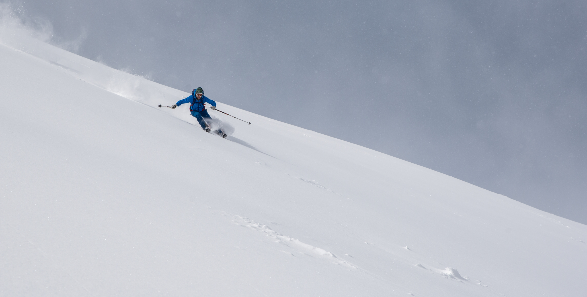

Our inspiring, week long backcountry skitouring adventure took place in eastern part of the country, where we blend together two main reasons to pull you out of your home, bottomless powder and cultural experience.
Seamless trip begins from capital city of Kyrgyzstan, Bishkek and stretches to the IssykKul province. The first thing you get faced with, is the golden eagles, taigans (Kyrgyz hunting dogs) and their masters on training. One of the most impressive style of hunting with involving the predators still existing in Tien-Shan fields.
Through six - seven hours driving with some food and Eagle performance stops on the way you will found yourself in very eastern part of the Kyrgyzstan where by the time we will wait you with a ready tea\coffee behind the safety briefing for future venture.
Next three skitouring days will based from our winter glamping base camp where you will be provided with a traditional Kyrgyz handcrafted Yurt stay. Winterized yurt lodge features wood/coal fired stove, solar lightings, native style rugs and throws on top of a extremely soft floor beds, isolated wooden floor, game tables and washstands in each yurt.
Dinners and breakfasts are family style, served in the separate dining/kitchen Yurt for all together, no self-cateringю Сhefs dishes are mostly from a local cuisine and you will probably love it if you are not vegan. The lunches are nicely packed for the field.
The intertwined terrain above our camp is comparably, more alpine aspected. Gives option for long touring days with a killer views in the blue bird days, ridge walks which ends skiing down all the way to the basecamp. For being independent from the weather the home slopes are features mellower inclines with an hectares variety of open tree glades.
After epic yurt camping experience itinerary leads up to the next valley, into the famous Jyrgalan district. Trough solid mostly touring day with crossing 3465m height pass you will appear down in this small settlement which was founded by Soviet government as a coal mine back in 1936.
Here our guests are will be provided with a finite skiers lodge at the upper edge of the village with warm, cosy house where is two (bed) rooms, one loby (library) room,. Two separate (with hot and cold running water) bathrooms. One traditional felt covered Yurt (optional sleeping area). One dining Yurt. Two outdoor terraces. Fire pit. Massive backyard for sunset skiing and lots of midnight stars for another three full ski days.
This exceptional spot gives immediate access to the fall line of Kyrgyz five star off-piste skiing in all direction right from the front door of the house. Local bottomless powder blanketing rows of epic steep ranges, mellow glides and wide open bowls offering 400 to 1000 meters of vertical drops every run.
In Jyrgalan village you will have a six different ski zones featuring sweet selection of all aspects alpine for skiing steep with possible first descents in a good condition with blue bird days and massive backyard with open tree line for shredding powder and stay independent on the weather and snow conditions.
DETAILS:
Location: Eastern Terskey Ala-Too Range, Issyk-Kul province, North Kyrgyzstan
Elevation: Our yurt base sits at 2700m. 2400m is the elevation of our lodge in the village. The highest point of the trip is might be the 3800m peaks
Season/Days: Our season starts from late December and stretches till mid March. The groups will have 9 days in KG in total. 7 full ski days in two different zones. 2 days for road trip between Bishkek-Karakol
Access: You don’t have to worry about complicated accesses. All the guests and their luggages will be transferred right to the front door of the lodges by vehicles. On the morning of the lodge to lodge touring day you just pack your stuff and it will wait for you at the next destination.
FOOD:
Breakfasts: Are starts with a coffee which ends with omelettes, french toasts, pancakes, burritos, porages and lots of sweets
Lunches: Packed lunchboxes for the field
Apres ski: You are welcome to our dining yurt anytime especially after ski days to hang there for some tea with bred and cheese/meet slice, where we pull out the maps and discuss the routes for further days.
Dinners: Lagman (Meat and vegetables with spicy sauce on top of a hand-stretched noodles). Plov (Rice with mutton and vegetables). Kuurdak (Fried beef/lam or chicken with potatoes). Shorpo (Soup with chunks of vegetables and lam). Oromo (vegetables and mints rolled in the pasta cooked on steam) Besh barmak (Lam, noodles, onions with a soup of a mutton). Dymdama (Vegetables with beef covered by cabbage and steamed in Kazan). Almost all the meals are have ability to be cooked as a vegetarian one.
Drinks: Unlimited Tea, French press coffee, Home made fruit juice
REQUAREMENTS:
Experience: Our require for all the members of the group is at least two winter of backcountry ski touring experience and level one avalanche safety course.
Group size: 4 person min – 10 person max. For all groups our services are works privately. We don’t like mess in our bases and we never mix 2 different groups in one. If the number of the guests are less than 4 either more than 10, shoot us an email for discussing for how we roll in that case
Insurance: Every one who joining us for skiing in KG should have a personal MED-EVAC insurance which can be easily paired with Kyrgyz mountain rescue service.
Gear: Fat skis (115mm-min) or split-boards (strongly recommended) for Kyrgyz dry snowpack, whole structure of avalanche safety gear: float bag (strongly recommended), transeever (must), shovel (must), probe (must).
Camping: Bring everything what you would bring if you are going for a winter camping, except tents and kitchen needs.
PRICE:
Group of 4-5: 1380 $/person/tour
Group of 6-7: 1270 $/person/tour
Group of 8-9: 1160 $/person/tour
Groups of 10: 1050 $/person/tour
Price includes:
- Kyrgyz Tours Guides (lead guide + tail guide)
- Airport transfers
- Roundtrip transfer between Bishkek-Karakol
- Hotel in Bishkek/lodging and meals in Karakol
- 4x4 transport between Karakol –Trail head lodges
- Yurt base camp + lodge at the village with all meals and drinks
- Chief chef and lodge man
- One satellite phone for the crew
Price includes:
- Visa support (Kyrgyzstan offers a visa free policy for most countries)
- International flights to and from Bishkek
- Medical/evacuation insurance
Local Guide: See bio's of our guides.
DAY PLANS:
Meeting day
International airport Manas – Bishkek – South shore of IssykKul lake – Karakol. Our private vehicle which picks you up in the airport will steal you from the capital city, Bishkek due east. Through seven hours driving with some food and eagle performance stops on the way you will arrive to Karakol town where you settle and get breath after your long jorney.
Day 1
Morning of the first day we start with coffee and approaching the Yurt base at Turgen valley. As soon as we organized in the area we are out for a avalanche safety practice and reading the snowpack which ends up with almost full day skiing.
Day 2-3
Day two is the Day! Now you are more or less ready to get deeper and make your laziness hate you!
Day 4
Following three days of skiing totally wild lines, our this midweek day will provided with long “lodge to lodge” mostly touring day. We will change the trailhead office trough crossing the 3465m height pass. The luggages are will be dropped in the village by our team while we having another full day of skiing.
Day 5-7
Here we have three ski touring days but much more terrain to explore.
Last day
This day will start quite early as we have to drive to the Bishkek which is pretty long but not means boring as we still have a plan to stop on the way and dip in the open air hot springs in the north shore of the lake. According the time left by arriving in the Bishkek we might run into the another stunning cultural evening at colorful Osh Bazaar.
Day 9
Early transfer to airport.
Booking: Shoot us an a e-mail for additional informations and booking requirements.